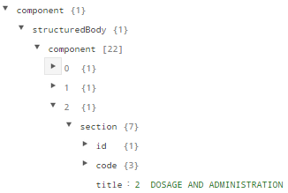
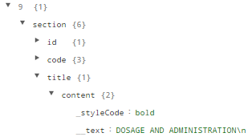
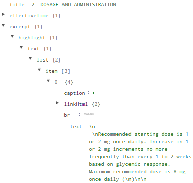
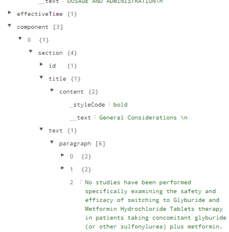

Having spent some time using the DailyMed API, let's discuss some of the positive aspects of the DailyMed API.
While the API has some great information, there are definitely some downsides.
 |
 |
| In the glimepiride labelling, dosage and administration is found under the key "title" within the section object that is within array element 2 within the component array, which is in turn nested within a structuredBody object, which is in turn nested within another object named component. | In the metformin labelling, dosage and administration is not found until array element 9 within the component array, which is in turn nested within a structuredBody object, which is in turn nested within another object named component. However, the actual text "DOSAGE AND ADMINISTRATION" is embedded further within a title object. which did not exist in the glimepride label. |
 |
 |
| The above is a continuation of the glimepiride JSON object. The dosage text is nested multiple levels deep within within the excerpt object. | Metformin's label is organized quite differently, with a section called "General Considerations" before the dosage is actually encountered. |